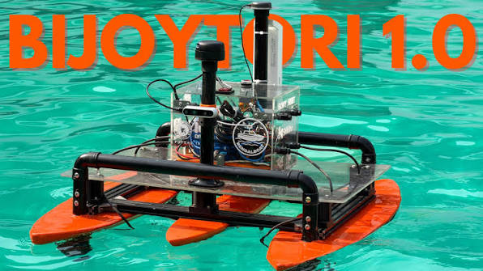
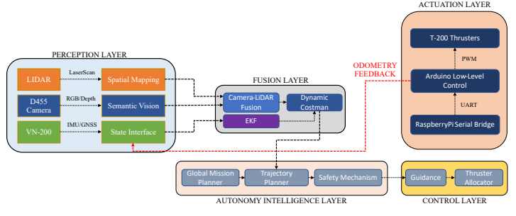
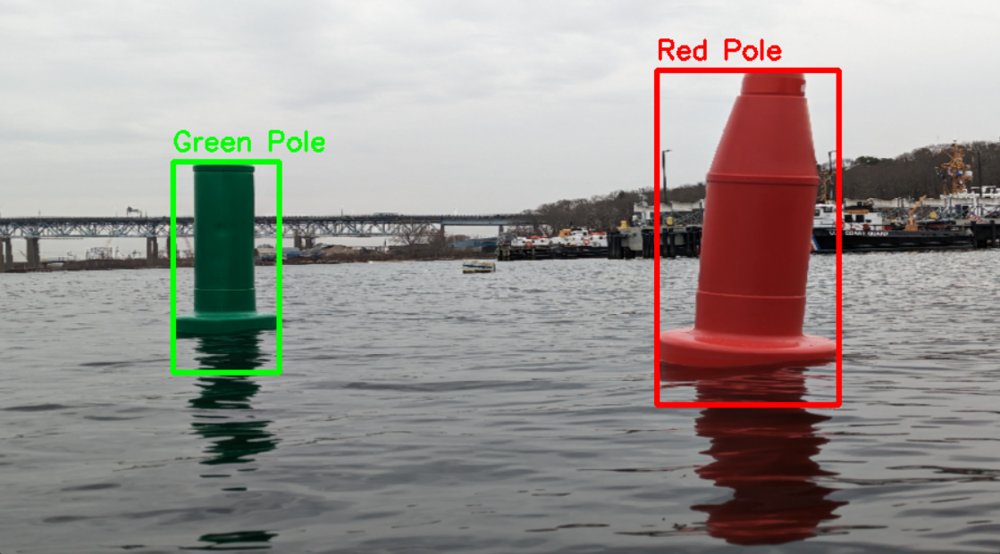
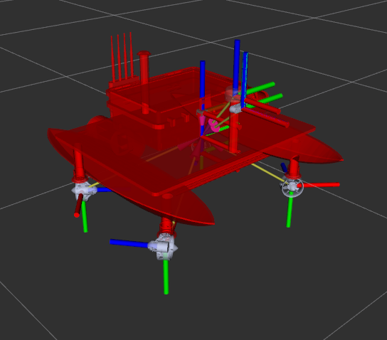

Project 03 · RoboBoat 2026
BijoyTori1.0 ASV
BijoyTori 1.0 is an autonomous surface vehicle developed by Team BengalBoat of Tech Autocrats for RoboBoat 2026. Its modular ROS 2 autonomy stack connects RGB-D perception, LiDAR sensing, state estimation, mission planning, and thruster control to navigate buoy channels and avoid obstacles on the water.
View source on GitHub ↗
Overview and contribution
The project brings perception, navigation, and marine hardware together in a dual-hull robotic platform. Development prioritizes repeatable behavior in three core missions: Navigation Channel, Avoid the Crowds, and Snack Run. These tasks exercise gate detection, obstacle avoidance, path following, and coordinated control before the team expands to more complex interactions.
My contribution focuses on the ROS 2 autonomy pipeline: integrating RGB-D perception, LiDAR obstacle sensing, EKF-based state estimation, and autonomous navigation, with Gazebo validation before hardware deployment. The technical design report also credits my role as a mentor, supporting the team through design feedback and hands-on guidance.
Modular ROS 2 architecture
The software follows a five-layer pipeline: perception, fusion and state estimation, planning and decision-making, motion control, and actuation. A Raspberry Pi 5 runs high-level autonomy, while an Arduino handles low-level PWM commands for the propulsion system. Separating these responsibilities allows sensing, mission logic, and motor control to be developed and inspected independently.
ROS 2 messages carry detections, range scans, point clouds, odometry, and velocity commands between modules. A consistent transform tree connects the map, odometry, vehicle, and sensor frames, allowing observations from different sensors to be interpreted in a shared spatial reference.

Buoy detection and sensor fusion
An Intel RealSense D455 supplies RGB imagery and depth measurements, while an RPLIDAR A2M12 provides 360-degree planar ranging. YOLOv8 detects mission objects such as buoys and gate markers. Depth checks help reject invalid detections, and LiDAR clustering supplies spatial candidates for association with visual classifications.
For channel navigation, red and green markers are paired to identify a gate and estimate its midpoint in the vehicle frame. The report also documents an OpenCV pipeline using HSV color masks, morphological filtering, and contour centroids for channel-marker detection. An Extended Kalman Filter combines inertial, GNSS, and odometry inputs to estimate vehicle pose and velocity for navigation.

Mission planning and motion control
A Behavior Tree executive sequences tasks and mission transitions. Global waypoint planning and local obstacle avoidance translate the world model into velocity commands, while PID guidance and thrust allocation turn those commands into propulsion demands. Safety monitoring adds geofencing and collision checks to the planning pipeline.
Navigation Channel and Avoid the Crowds use fused gate positions to select a passage while maintaining clearance from obstacle buoys. Snack Run adds mark-buoy tracking and a curvature-constrained turn before returning through the entry gate. Docking, Skeeball, and Water Blast are described as secondary or conditional development objectives in the report.
Simulation and integration testing
Gazebo provides a virtual environment for checking perception, navigation, and control before on-water deployment. Simulated camera and LiDAR streams feed the ROS 2 pipeline, while RViz exposes the vehicle model, coordinate frames, sensor observations, occupancy maps, and planned paths. The report illustrates grid-based A* planning with obstacle inflation around course hazards.
Validation combines unit checks for processing functions, integration checks for sensor-to-detection alignment, and joystick teleoperation to inspect control response. RQt Graph, RViz, and topic-rate monitoring help diagnose communication and timing issues. Launch configuration changes switch the pipeline from simulated sensors to physical drivers while preserving the interfaces used by downstream autonomy modules.

Marine platform, power, and safety
The catamaran platform uses resin-sealed, fiberglass-reinforced 3D-printed hulls, an aluminum extrusion frame, and an acrylic deck. Adjustable camera mounts support sensor alignment, and modular brackets simplify maintenance. Four Blue Robotics T200 thrusters mounted at 45-degree angles provide thrust for forward, lateral, and rotational maneuvers.
A custom 5S3P lithium-ion battery pack, rated at 18.5 V and 15,000 mAh, supplies the propulsion bus. Regulated 5 V power serves computing, sensors, and communications. A physical kill switch and an Arduino-controlled relay provide manual shutdown and electronic propulsion cutoff, complementing software safety monitoring.